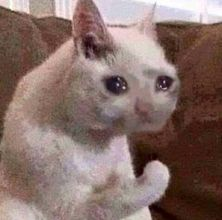

<!DOCTYPE html>
<html lang="pt-br">
<head>
    <meta charset="UTF-8">
    <meta name="viewport" content="width=device-width, initial-scale=1.0">
    <title>KKKKK</title>
    <link rel="shortcut icon" href="favicon.png"> <!-- Favicon -->
    <link rel="stylesheet" href="assets/css/index.css" media="all"><!-- Default css -->
    <!-- Bootstrap -->
    <link href="https://cdn.jsdelivr.net/npm/bootstrap@5.3.6/dist/css/bootstrap.min.css" rel="stylesheet" integrity="sha384-4Q6Gf2aSP4eDXB8Miphtr37CMZZQ5oXLH2yaXMJ2w8e2ZtHTl7GptT4jmndRuHDT" crossorigin="anonymous">
    <script src="https://cdn.jsdelivr.net/npm/bootstrap@5.3.6/dist/js/bootstrap.bundle.min.js" integrity="sha384-j1CDi7MgGQ12Z7Qab0qlWQ/Qqz24Gc6BM0thvEMVjHnfYGF0rmFCozFSxQBxwHKO" crossorigin="anonymous"></script>
    <script src="https://cdnjs.cloudflare.com/ajax/libs/p5.js/1.6.0/p5.min.js"></script> <!-- p5 js -->
    <link href='https://unpkg.com/boxicons@2.1.4/css/boxicons.min.css' rel='stylesheet'> <!-- Box icons -->
    <script src="https://cdn.jsdelivr.net/npm/chart.js"></script> <!-- chart js -->
    <!-- Aos -->
    <link href="https://unpkg.com/aos@2.3.1/dist/aos.css" rel="stylesheet">
    <script src="https://unpkg.com/aos@2.3.1/dist/aos.js"></script>
    <style>
        body {
            font-family: "Quicksand", sans-serif;
            font-optical-sizing: auto;
            font-weight: 400;
            font-style: normal;
            overflow-x: hidden;
        }
        html {
            overflow-x: hidden;
        }
    </style>
</head>
<body>

<!--     <script>AOS.init();</script>
    <header class="text-center m-5">
        <h1><span data-aos="fade-up" data-aos-duration="1000">TOMA</span> <span data-aos="fade-up" data-aos-duration="2000">NO SEU</span> <span data-aos="fade-up" data-aos-duration="3000">CU</span></h1>
        <h2 data-aos="fade-right" data-aos-duration="2000">&#128514; kkkkkkk</h2>
        
    </header>
    <div class="degrade"></div>
    <main class="p-2 ps-2 pe-2">

        <div class="m-2 mb-5" data-aos="fade-left" data-aos-duration="2000">
            <h4 class="mt-5">Um pouco sobre mim</h4>
            <div class="about-me m-3">
                <div class="text-center"></div>
                <p class="ms-1">Prazer, meu nome é Nycolas, mas pode me chamar de canelinha kkk, tenho atualmente 18 anos. Não sei onde você está e nem sei quem é você, mas sei que você me escaneou (Láh ele), então pelo menos segue lá no Insta &#128076;<br></p>
                <a href="https://www.instagram.com/nycolasds/" class="btn-instagram p-3 d-block w-100 text-center" target="_blank">Meu instagram</a>
            </div>
        </div>


        <div class="m-1 mb-5" data-aos="fade-right" data-aos-duration="1000">
            <h4 class="mt-3">Estatísticas & Objetivos</h4>
            <div class="m-2">
                <div class="text-center"></div>
                <ul>
                    <li>Amizades femininas: 0%</li>
                    <li>Viagem para o México: 10%</li>
                    <li>Saltar de paraquedas: 99% (Só falta o dinheiro)</li>
                    <li>Solteiro: Muito (Eu sou 0km)</li>
                    <li>Sexo: Hétero</li>
                    <li>Financeiro: Talvez devendo</li>
                    <li>Virgem: 100% (Não é por opção)</li>
                    <li>Vida social: 20%</li>
                    <li>Sanidade mental: O que é isso?</li>
                </ul>
            </div>
        </div>


        <div class="m-1 mb-5" data-aos="fade-left" data-aos-duration="2000">
            <h4 class="mt-3">Gostos & Habilidades</h4>
            <div class="m-2">
                <div class="text-center"></div>
                <ul>
                    <li>Treinar &#127947;</li>
                    <li>Ouvir música (Vários tipos) &#127911;</li>
                    <li>Tocar cavaquinho (To aprendendo kkk) &#127928;</li>
                    <li>Jogar (De vez em quando) &#128187;</li>
                    <li>Cozinheiro (Só arroz, feijão e bife) &#127860;</li>
                </ul>
            </div>
        </div>


        <div class="m-1 mb-5" data-aos="fade-right" data-aos-duration="2000">
            <h4 class="mt-3">Tipo de mulher</h4>
            <div class="m-2">
                <div class="text-center"></div>
                <p class="ms-1">Que seja dahora, saiba trocar ideia e que faça algum tipo de esporte. <span class="palavra-oculta">(cacheada com rostinho de safada)</span></a>
            </div>
        </div>
    </main>
    <footer class="p-2">
        <p class="text-center">Página feita para os curiosos(as) kk &#9996;</p>
    </footer> -->
</body>
</html>